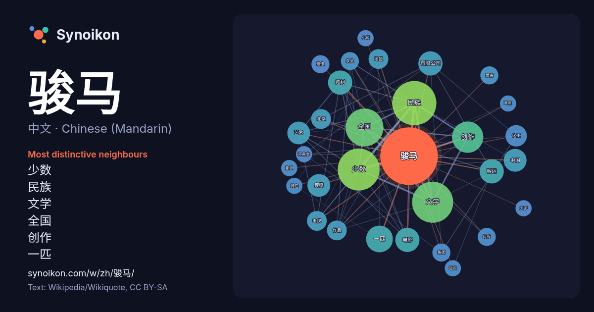

中文 · Chinese (Mandarin) · word of the day list
骏马
“horse” · The words found around it in 272 instances from Chinese (Mandarin) Wikipedia, Wikiquote.

Most distinctive neighbours
- 少数 27×
- 民族 26×
- 文学 25×
- 全国 19×
- 创作 15×
- 一匹 12×
- 题材 9.9×
- 客运 9.6×
- 奔腾 9.0×
- 有限公司 8.9×
- 电影 8.3×
- 艺术 7.9×
- 化工 7.9×
- 电视 6.1×
- 获奖 5.9×
- 优秀 5.8×
- 北京 5.8×
- 蒙古 5.6×
- 集团 5.4×
- 最佳 5.1×
× = how many times more often than in general Chinese (Mandarin) Wikipedia text.
Most frequent neighbours
- 民族 30
- 少数 27
- 文学 26
- 全国 22
- 创作 15
- 一匹 11
- 客运 9
- 有限公司 9
- 电影 9
- 题材 9
- 中国 8
- 奔腾 8
- 艺术 8
- 化工 7
- 作品 6
- 北京 6
- 地区 6
- 电视 6
- 优秀 5
- 最佳 5
In context
- 全国少数民族文学创作奖骏马奖，是1981年创设，由中国作家协会、国家民族事务委员会共同主办的少数民族文学的国家级文学奖。中国少数民族文学创作骏马奖每三年举办一届。自创建到第十一届，共有748人次，709篇（部）作品获奖。获奖作品为少数民族作家用汉语或少数民族语言撰写出版的文学作品，形式包括长篇小说 Wikipedia snippets · 全国少数民族文学创作骏马奖
- 在北京电影学院教课，任教授多年，曾任导演系主任，副院长。作品 《本命年》获1990年柏林电影节银熊奖，《香魂女》获得1993年柏林电影节金熊奖，《黑骏马》获1995年蒙特利尔电影节最佳电影导演奖。 1942年8月14日，谢飞出生在陕西延安。父亲谢觉哉是1949年成立的中华人民共和国宪法和很多法律的奠 Wikipedia snippets · 谢飞
- 骏马奖 (文学)：（1981-）全称全国少数民族文学创作“骏马奖”。 骏马奖 (影视)：（1981-2005）全称全国少数民族题材电影电视艺术“骏马奖”，包括全国少数民族题材电影艺术“骏马奖”及全国少数民族题材电视艺术“骏马奖”。 骏马奖 (动漫)：马鞍山市一游戏动漫COSPLAY大赛暨漫画、动画大赛的奖项。 Wikipedia snippets · 骏马奖 (消歧义)
- 在中国历史博物馆考古部、中国社会科学院民族所、海军文艺创作室等单位工作。主要从事小说创作，研究中国伊斯兰史、中亚及蒙古史。代表作有《北方的河》、《黑骏马》、《心灵史》、《金牧场》等。已出版各类著作30余种。 1948年出生于北京。 1966年6月3日晚，17岁的张承志与骆小海、卜大华、邝桃生、王铭、 Wikipedia snippets · 张承志
- 《黑骏马》（英語：A Mongolian Tale），1995年上映的爱情片、伦理片，导演是谢飞，编剧是作家张承志，改编自张承志的同名小说，主演是娜仁花、腾格尔，该片使用的是蒙古语，亦有普通话配音版发行。 内蒙古大草原的白音宝力格（腾格尔）幼年丧母，由自己的奶奶抚养大，他有一个从小青梅竹马的女友索米 Wikipedia snippets · 黑骏马 (1995年电影)
- 《苏特里》（Suttree；1979年） 《血色子午线》（Blood Meridian；1985年），時代雜誌百大英文小說 边境三部曲（1992年—1998年） 《天下骏马》（All the Pretty Horses；1992年） 《穿越》（The Crossing；1994年） 《平原上的城市》（Cities of Wikipedia snippets · 戈馬克·麥卡錫
- 黑骏马，可以是： 黑骏马 (安娜·塞维尔小说)，英国女作家安娜·塞维尔的小说。 黑骏马 (张承志小说)，中国作家张承志的小说。 黑骏马 (1971年电影)，由英国和西德共同拍摄的电影，导演詹姆斯·希尔。 黑骏马 (1994年电影)，由美国和英国共同拍摄的电影，导演卡罗琳·汤普森。 黑骏马 Wikipedia snippets · 黑骏马
- 《黑骏马》，张承志的代表性中篇小说。 《黑骏马》荣获第二届全国优秀中篇小说奖。该中篇小说曾由著名导演谢飞改编为电影。 “我”回到草原，借了一匹马，牧羊人认出这是“钢嘎·哈拉”（黑骏马），我于是想起了索米娅和往事。母亲去世后，父亲（公社社长）把我送到“额吉”家，同年生的“索米娅”和我是奶奶的宝贝，一 Wikipedia snippets · 黑骏马 (张承志小说)
More Chinese (Mandarin) words
Precomputed on 2026-10-09 with default settings (±5 words, medium corpus). The interactive map can refresh it with live data.